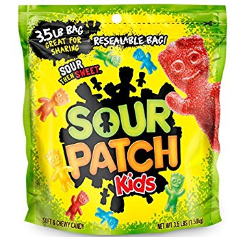
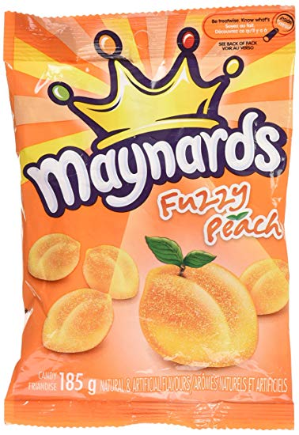
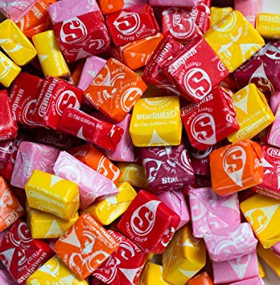
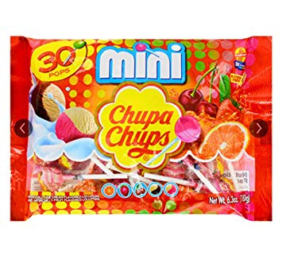
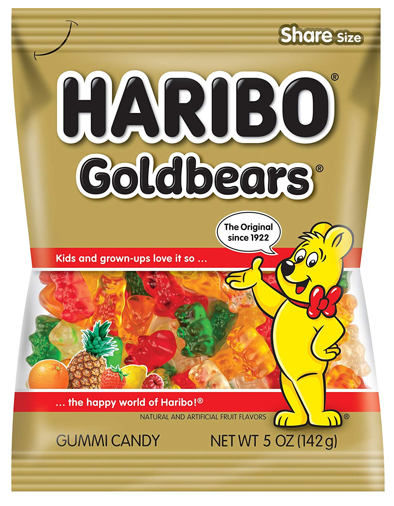

Our favourite candy is Sour Patch Kids! Sour patch kids are very good, they look like little aliens that are different flavours such as, cherry [red], blueberry [blue], lemon [yellow], lime [green], and orange [orange]. The flavour starts off sour and then after a while it ends up sweet which then it actually taste the the actual flavour.
    Fuzzy Peaches: Its a candy that kinda taste like real peaches and artifical flavouring, and the color is orange. For some people it taste a bit sour.
Starburst: These candies is a chewy candy that has a lot of different flavours such as, Cherry, Strawberry, Orange, Lemon, and Friut punch.
Chupa Chups: The flavours of Chupa Chups are, Strawberry, Orange, Cola, Cherry, and Strawberry and Cream.
Haribo Gummies: These Gummy Bears are very good, but are not arifical. The flavours are all the same. It is still a great thing to eat though, and they have pretty colors.